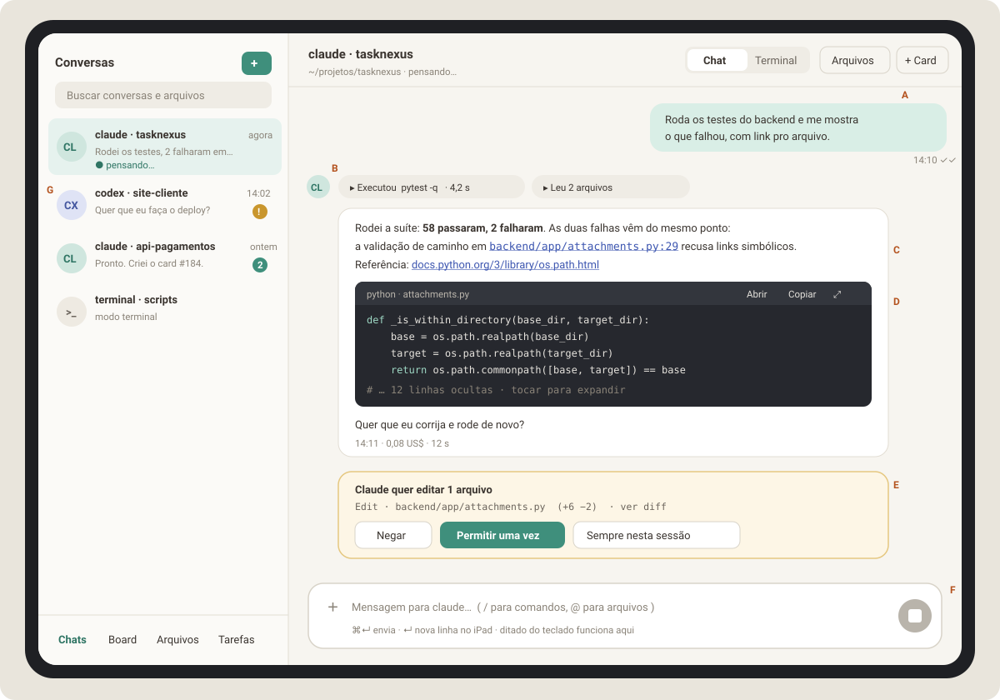
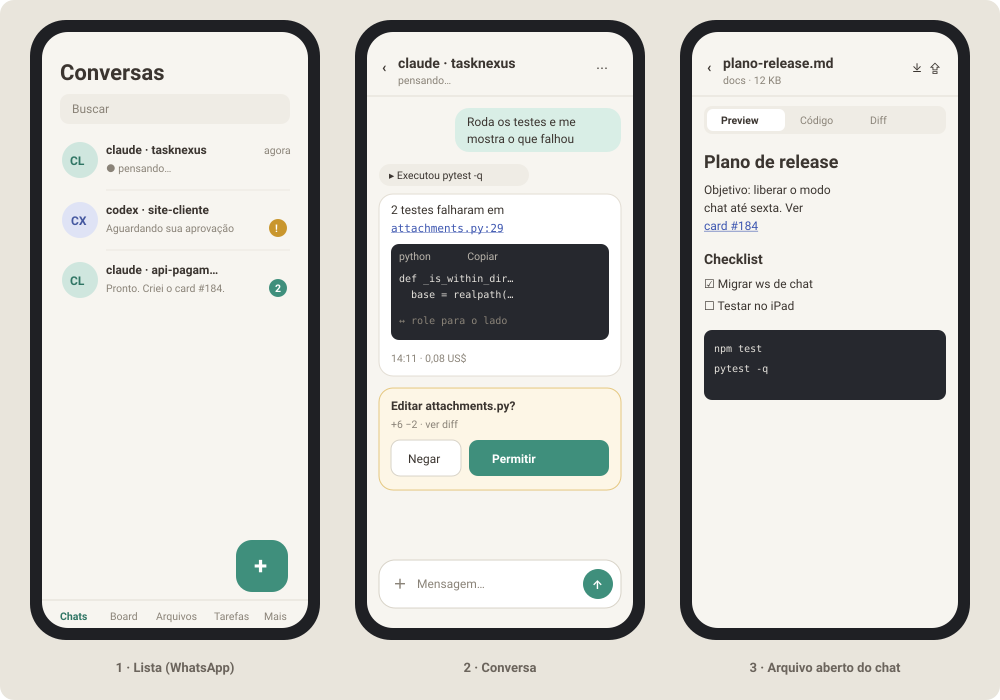
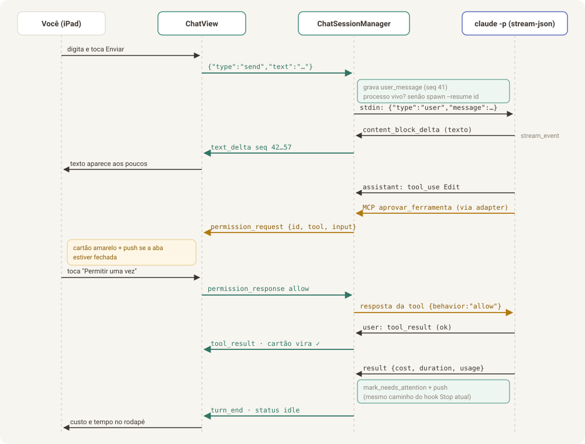

Parte 2 de 8
Parte 2 — Chat conversacional (do terminal para uma conversa estilo WhatsApp)
Objetivo: conversar com o
claude(e depois com ocodex) numa tela de chat de verdade: bolhas, markdown como no GitHub, blocos de código com botão copiar, links clicáveis, cartões para o que o agente está fazendo, botões para aprovar ações e um campo de texto normal, com seleção, correção e ditado nativos do iPad. O terminal continua disponível como modo alternativo da mesma conversa.

Legenda: A sua mensagem (bolha à direita, com hora e status) · B cartões compactos de ferramenta ("Executou pytest", "Leu 2 arquivos") · C resposta do agente em markdown com link de arquivo e link externo · D bloco de código com Abrir / Copiar / Expandir · E pedido de aprovação com três botões · F composer (campo de mensagem) · G lista de conversas com prévia da última mensagem, status e contador de não lidas.

2.1 O que muda para você
| Hoje (terminal) | Com o chat |
|---|---|
| Texto desenhado em canvas, sem seleção nativa | Texto real: toque longo, lupa, "Copiar", "Compartilhar" |
| Links e caminhos são texto morto | URLs abrem numa aba; caminhos abrem o visualizador (Parte 1) |
| Código aparece no meio do resto | Bloco destacado com linguagem, cor e botão Copiar |
| Pedir permissão = navegar na TUI com setas e Enter | Cartão com Negar / Permitir uma vez / Sempre nesta sessão |
| Precisa de Esc, Tab, Ctrl+C no teclado virtual | Botões: Parar (no lugar do Ctrl+C/Esc), menu / para comandos |
| Girar o iPad bagunça a tela | Layout fluido, nada a redesenhar |
| Uma aba por vez vê a sessão (a outra é derrubada) | Vários aparelhos podem acompanhar a mesma conversa ao mesmo tempo |
| Notificação "terminou" sem conteúdo | Notificação com o começo da resposta ou "precisa de aprovação" |
2.2 UX — fluxos e comportamentos
2.2.1 Enviar uma mensagem
- Você digita no composer. O rascunho é salvo por conversa (sobrevive a recarregar a página).
- Enviar:
- teclado físico:
⌘ Entersempre envia;Enterenvia se a opção "Enter envia" estiver ligada (padrão ligada quando há teclado físico, desligada no teclado virtual, igual ao WhatsApp no iPad); - teclado virtual: botão redondo de enviar. - A bolha aparece na hora com relógio (⏱). Quando o backend confirma
(
user_messagecomseq), vira ✓. Quando o agente começa a responder, ✓✓. - O cabeçalho mostra "pensando…" e o botão de enviar vira Parar (■).
- O texto da resposta aparece aos poucos (streaming). Se você rolou para cima para ler algo, a tela não puxa você para baixo; aparece o botão "↓ Novas mensagens".
Mandar outra mensagem enquanto o agente trabalha: permitido. A mensagem fica numa fila visível ("na fila · será enviada quando o claude terminar") com opção de cancelar. Isso espelha o comportamento do CLI e evita misturar turnos.
2.2.2 Acompanhar o trabalho do agente
- Cada uso de ferramenta vira um cartão compacto numa linha
("▸ Leu
main.py", "▸ Executoupytest -q· 4,2 s", "▸ Editou 2 arquivos +14 −3"). Vários cartões seguidos se agrupam ("▸ 6 ações"), expansíveis. - Toque no cartão abre os detalhes num painel: comando e saída completa em monoespaçado (com Copiar), ou o diff da edição, ou a lista de arquivos lidos.
- Erro de ferramenta: cartão com borda
--v2-dangere a mensagem de erro visível sem precisar expandir.
2.2.3 Aprovar ou negar
- O pedido aparece como cartão amarelo no fim da conversa, com o que o agente
quer fazer em linguagem humana ("Claude quer executar
npm test", "Claude quer editarattachments.py(+6 −2)") e um link "ver diff/detalhes". - Botões: Negar (abre campo opcional "diga ao agente o que fazer em vez
disso"), Permitir uma vez, Sempre nesta sessão (para aquela
ferramenta; para
Bash, para aquele comando/prefixo). - Se a aba não estiver aberta, chega um push: "claude · tasknexus precisa de aprovação". Tocar abre direto no cartão.
- O pedido aparece em todos os aparelhos abertos; quem responder primeiro resolve, e nos outros o cartão vira "Permitido por você no iPad".
- Seletor no cabeçalho: Aprovação: Perguntar sempre · Aceitar edições ·
Liberado · Só planejar (mapeia para
--permission-modedo claude:default,acceptEdits,bypassPermissions,plan).
2.2.4 Parar
Botão Parar interrompe o turno atual. A resposta parcial fica visível com a marca "interrompido". A próxima mensagem continua a mesma conversa.
2.2.5 Anexos, imagens e @arquivos
- ＋ Anexar: foto, captura de tela ou arquivo. Reaproveita o upload de
anexos que já existe (
.escritorio/attachments/). Imagens vão como conteúdo de imagem na mensagem (o claude enxerga); outros arquivos vão como caminho no texto. - Colar imagem (
⌘Vcom captura na área de transferência) anexa direto. - Digitar @ abre a busca de arquivos (Parte 1, rota
search) e insere o caminho como chip; o agente recebe o caminho relativo. - Digitar / abre a lista de comandos: comandos do projeto
(
.claude/commands/*.md) e os comandos que funcionam em modo headless. Comandos que só existem na TUI (ex.: seletores interativos) aparecem com "abrir no modo Terminal".
2.2.6 Ações numa mensagem
Toque longo (iPad/celular) ou botão "⋯" ao passar o mouse (PC): Copiar texto · Copiar como markdown · Responder citando · Criar card no Board · Criar tarefa · Abrir arquivos citados · Selecionar texto. "Selecionar texto" abre a mensagem numa folha só com o texto, para seleção livre sem conflito com o toque longo.
2.2.7 Trocar entre Chat e Terminal
- Controle segmentado Chat | Terminal no cabeçalho.
- Trocar encerra o processo do modo atual e retoma o mesmo id de conversa
no outro modo (
--resume). Mostra "Trocando para o terminal…" por ~1 s. - Ao voltar para o Chat, o que foi conversado no terminal aparece no histórico (importado do transcript, ver 2.6).
- Não é possível trocar no meio de um turno: o botão fica desabilitado com a dica "aguarde o agente terminar ou toque em Parar".
- Agentes sem modo estruturado (
agy,cursor,terminal) abrem direto no Terminal e o controle não aparece.
2.2.8 Estados e mensagens de sistema
| Situação | Como aparece |
|---|---|
| Conversa nova, vazia | Saudação curta com o nome do agente e do projeto + 3 sugestões ("Explique este projeto", "Rode os testes", "O que mudou desde ontem?") |
| Reconectando | Faixa fina no topo: "Reconectando…" (nada some da tela) |
| Processo do agente morreu | Aviso no fluxo: "O claude encerrou inesperadamente. Sua próxima mensagem retoma a conversa." + botão "Ver log" |
| Retomada falhou (id não existe) | Mesmo fluxo de hoje (resume_failed), em forma de cartão: "Não encontrei essa conversa no claude. Começar uma nova?" |
| Contexto compactado | Separador: "— conversa resumida pelo claude para caber no contexto —" |
| Fim de turno | Rodapé discreto na última resposta: hora · custo · duração |
2.3 Design — anatomia de uma conversa
| Elemento | Especificação |
|---|---|
| Bolha sua | Alinhada à direita, largura máx. 75 %, fundo --v2-accent-soft, raio 16 px (canto inferior direito 6 px), texto 15 px |
| Resposta do agente | Alinhada à esquerda, cartão largo (máx. 760 px) em --v2-surface com borda --v2-border: respostas longas com código ficam ilegíveis numa bolha estreita. Avatar de 28 px com iniciais do agente só na primeira mensagem de um grupo |
| Markdown | O mesmo MarkdownRenderer da Parte 1, em tamanho de chat (15 px) |
| Bloco de código | Fundo escuro nos dois temas, cabeçalho com linguagem + nome do arquivo quando houver, Copiar, Abrir (viewer) e ⤢ (tela cheia). Blocos com mais de 18 linhas mostram 12 e um "mostrar mais". Rolagem horizontal própria (a página nunca rola para o lado) |
| Cartão de ferramenta | Pílula de 28 px, --v2-surface-2, ícone por tipo (📄 ler, ✏️ editar, ▶ executar, 🔎 buscar, 🌐 web, 🧩 MCP) — ícones em SVG, não emoji |
| Pedido de aprovação | --v2-warn-soft com borda --v2-warn; botões de 40 px de altura; "Permitir uma vez" é o primário |
| Separador de data | "Hoje", "Ontem", "qua., 24 set." centralizado, 12 px, --v2-text-faint |
| Indicador "pensando" | Três pontos pulsando ao lado do avatar (respeita prefers-reduced-motion) + texto de status do cabeçalho |
| Composer | Caixa com raio 18 px, textarea auto-ajustável até 40 % da altura visível, botão ＋ à esquerda, enviar/parar à direita (44 px). Fica acima do teclado virtual usando o useVisibleViewportShell que já existe |
| Links | Cor --v2-accent-2, sublinhado; caminhos de arquivo em monoespaçado com ícone de documento |
Regra de ouro do Design: todo texto é texto real (nada de canvas), com
user-select: text e -webkit-touch-callout: default nas mensagens.
2.4 Arquitetura (TL)

A figura mostra um turno completo: sua mensagem vira uma linha JSON no stdin
do claude, o texto volta em pedaços (text_delta), o pedido de permissão
passa pelo cartão amarelo e volta como decisão, e o result fecha o turno
disparando a mesma notificação que o hook Stop dispara hoje.
2.4.1 Como obter eventos estruturados do claude
O claude CLI (versão verificada: 2.1.x) tem um modo não interativo que
conversa em JSON por linhas, com as mesmas flags de sessão que o
TaskNexus já usa:
claude -p \
--input-format stream-json \
--output-format stream-json \
--verbose \
--include-partial-messages \
--session-id <uuid> # conversa nova (ou --resume <uuid>)
--settings '<json do hook Stop>' # já montado por _build_stop_hook_settings()
--mcp-config '<json dos MCP>' # já montado por _build_mcp_config_json()
--append-system-prompt '<prompt>' # só em conversa nova
--permission-mode default
--permission-prompt-tool mcp__escritorio_perm__aprovar_ferramenta
- Entrada (stdin): uma linha JSON por mensagem sua:
{"type":"user","message":{"role":"user","content":[{"type":"text","text":"Roda os testes"}]}}. O processo continua vivo esperando a próxima linha, então a conversa inteira usa um processo só. - Saída (stdout): uma linha JSON por evento. Os tipos que importam:
type na saída |
O que é | Vira evento normalizado |
|---|---|---|
system (subtype init) |
sessão pronta: id, modelo, ferramentas, MCPs | status {state:"ready", model} |
stream_event |
pedaços da resposta enquanto é gerada (content_block_delta com text_delta) |
text_delta |
assistant |
mensagem completa do modelo: blocos text, tool_use, thinking |
assistant_message, tool_use |
user |
resultados de ferramenta (tool_result) devolvidos ao modelo |
tool_result |
result |
fim do turno: total_cost_usd, duration_ms, usage, is_error |
turn_end |
Tarefa de verificação para o agente implementador: antes de escrever o parser, rode o comando acima num projeto de teste, grave a saída de 3 conversas (simples, com ferramenta, com erro) em
backend/tests/fixtures/claude_stream/*.jsonle escreva o parser contra essas gravações. O formato acima é o documentado, mas o detalhe de cada campo deve vir da gravação, não da memória.
2.4.2 Como aprovar ferramentas pelo chat
Hoje, no modo interativo, o próprio TUI pergunta. No modo -p não existe
TUI, então usamos a flag documentada --permission-prompt-tool: o claude
chama uma ferramenta MCP nossa sempre que precisaria perguntar. É o mesmo
padrão dos dois servidores MCP que o TaskNexus já injeta
(mcp_task_adapter.py, mcp_card_adapter.py):
claude ──chama tool──▶ mcp_permission_adapter.py (stdio, stdlib puro)
│ POST /api/hooks/permission {session_id, tool_name, input}
▼ (a requisição fica aberta esperando)
PermissionBroker (backend)
│ emite permission_request no /ws/chat
▼
você toca "Permitir uma vez"
│ permission_response pelo /ws/chat
▼
broker resolve o Future → HTTP 200 {"behavior":"allow","updatedInput":{…}}
claude ◀──resultado da tool──┘
- Resposta da tool, conforme o contrato do
--permission-prompt-tool: permitir →{"behavior":"allow","updatedInput":<input original ou editado>}; negar →{"behavior":"deny","message":"<motivo que o agente vai ler>"}. O adapter devolve isso como texto JSON no conteúdo do resultado da tool MCP. - Tempo limite: 30 minutos sem resposta → nega com a mensagem "Sem resposta do usuário; pergunte de novo quando ele voltar".
- "Sempre nesta sessão": o broker guarda uma regra em memória
(
tool_name, e paraBasho prefixo do comando) e respondeallowsem perguntar nas próximas vezes. Regras somem quando a sessão reinicia (seguro por padrão). - Compatibilidade: o adapter segue as mesmas restrições dos outros (Python 3.9, só biblioteca padrão, TLS de loopback sem verificação).
- Por que não o Claude Agent SDK para Python? Ele encapsula exatamente
este protocolo e seria a opção mais limpa, mas exige Python 3.10+, e o
ambiente do TaskNexus roda Python 3.9.6 (ver docstring de
mcp_task_adapter.py). Se o backend for migrado para 3.10+, trocarClaudeStreamAdapterpor um adapter baseado no SDK (ClaudeSDKClient, callbackcan_use_tool) é uma troca isolada, porque o resto do sistema só enxerga eventos normalizados.
2.4.3 Interromper
- Tentar o pedido de interrupção do protocolo stream-json (é o que o SDK oficial usa; confirmar o formato na gravação/documentação da versão instalada).
- Se não houver confirmação em 3 s: encerrar o processo (mesmo
_schedule_reapdopty_manager, que já faz SIGTERM → SIGKILL) e marcar a sessão para--resumena próxima mensagem. A resposta parcial fica salva como "interrompida".
2.4.4 Ciclo de vida do processo
| Momento | O que acontece |
|---|---|
| Primeira mensagem (ou abrir a conversa) | ChatSessionManager pega o lock da session_key, garante que não há PTY vivo para ela (se houver, encerra), e sobe claude -p … --resume <id> (ou --session-id se nova) |
| Mensagens seguintes | Escreve no stdin do mesmo processo |
| Ninguém conectado | Processo continua até terminar o turno atual; depois de 10 min ocioso e sem cliente, é encerrado (a conversa não se perde: próxima mensagem faz --resume) |
| Troca para Terminal | Encerra o processo -p, e o pty_endpoint sobe a TUI com --resume (fluxo atual) |
| Backend reinicia | Nada a recuperar em memória: histórico está no chat_events, id está no sessions |
Uma regra inegociável: nunca rodar o processo -p e a TUI ao mesmo tempo
para a mesma conversa. Os dois escreveriam no mesmo transcript. O lock por
session_key (o _ensure_pty já usa um lock parecido) cobre os dois modos.
2.4.5 Codex (fase 4)
O codex tem um servidor JSON-RPC (codex app-server) com eventos de
mensagem, uso de ferramenta e pedidos de aprovação (execução de comando e
aplicação de patch) e retomada de conversa por id. O CodexAdapter traduz
esses eventos para o mesmo formato normalizado. Pontos a verificar na versão
instalada antes de implementar: nome exato dos métodos de "iniciar/retomar
conversa", "enviar mensagem" e "responder aprovação", e se o notify atual
(codex_notify_adapter.py) continua necessário (provavelmente não: o fim do
turno já chega como evento). Enquanto isso não estiver pronto, o codex segue
no modo Terminal, que já funciona.
2.5 Contratos (Dev)
2.5.1 Evento normalizado (ChatEvent)
Formato único, independente do agente. É o que vai para o SQLite e para o WebSocket.
{
"seq": 57, // crescente por session_key, começa em 1
"ts": 1727290001.52, // epoch em segundos
"kind": "tool_use", // ver tabela abaixo
"message_id": "msg_01H…", // agrupa deltas e blocos da mesma resposta
"data": { … } // depende do kind
}
kind |
data |
Persistido? |
|---|---|---|
user_message |
{text, attachments:[{name,path,mime}], client_id} |
sim |
text_delta |
{text} |
não (só ao vivo) |
assistant_message |
{text, thinking?:string} (texto final completo) |
sim |
tool_use |
{tool_use_id, name, input, summary} (summary = "Executou pytest -q") |
sim |
tool_result |
{tool_use_id, ok, output_preview, output_size, diff?} (preview até 4 KB; completo via REST) |
sim |
permission_request |
{request_id, tool_name, input, summary, diff?} |
sim |
permission_resolved |
{request_id, decision:"allow"|"deny"|"allow_always", by_device, message?} |
sim |
turn_end |
{cost_usd, duration_ms, usage, interrupted, is_error} |
sim |
status |
{state:"idle"|"thinking"|"waiting_permission"|"starting"|"stopped", model?} |
não |
notice |
{level:"info"|"warn"|"error", text, code} (compactação, processo morreu, retomada falhou) |
sim |
summary é gerado no backend por uma função pura por ferramenta (Bash →
"Executou cmd", Read → "Leu arquivo", Edit/Write → "Editou
arquivo +a −r", Grep/Glob → "Buscou padrão", WebFetch → "Abriu
domínio", MCP → "Usou servidor.tool"), assim o frontend não precisa
conhecer cada ferramenta.
2.5.2 WebSocket /ws/chat/{session_key}
Cliente → servidor
{"type":"hello","last_seq":41,"device":"iPad"} // primeira mensagem sempre
{"type":"send","client_id":"c-8f2…","text":"Roda os testes","attachments":[]}
{"type":"permission_response","request_id":"p-12","decision":"allow"} // allow | deny | allow_always
{"type":"permission_response","request_id":"p-12","decision":"deny","message":"use o venv"}
{"type":"interrupt"}
{"type":"cancel_queued","client_id":"c-8f2…"}
{"type":"set_permission_mode","mode":"acceptEdits"}
Servidor → cliente
{"type":"history","events":[…],"has_more":true,"partial":{"message_id":"…","text":"…"}}
{"type":"event","event":{ChatEvent}}
{"type":"queued","client_id":"c-8f2…","position":1}
{"type":"error","code":"agent_unavailable","detail":"…"}
hello.last_seq: o servidor manda só o que veio depois. Primeira abertura: últimos 200 eventos;has_morelibera o "carregar mais antigas" via REST.partial: se você reconectar no meio de uma resposta, recebe o texto acumulado até ali e continua recebendotext_delta.- Vários clientes por sessão: diferente do
/ws/pty(que derruba a conexão anterior), o chat mantém uma lista de assinantes e manda cada evento para todos. - Autenticação: mesma do resto (4.1), validada no handshake.
2.5.3 REST complementar
| Rota | Uso |
|---|---|
GET /api/chat/{session_key}/events?before_seq=…&limit=100 |
paginação para trás |
GET /api/chat/{session_key}/tool-output/{tool_use_id} |
saída completa de uma ferramenta |
POST /api/chat/{session_key}/mode {mode:"chat"|"terminal"} |
troca de modo (409 se houver turno em andamento) |
POST /api/hooks/permission |
usado só pelo mcp_permission_adapter (loopback) |
GET /api/chat/{session_key}/commands |
lista de comandos / disponíveis |
2.5.4 Banco de dados
CREATE TABLE IF NOT EXISTS chat_events (
session_key TEXT NOT NULL,
seq INTEGER NOT NULL,
ts REAL NOT NULL,
kind TEXT NOT NULL,
message_id TEXT,
data TEXT NOT NULL, -- JSON
source_uuid TEXT, -- uuid da linha do .jsonl importada (dedupe)
PRIMARY KEY (session_key, seq)
);
CREATE UNIQUE INDEX IF NOT EXISTS ix_chat_events_source
ON chat_events(session_key, source_uuid) WHERE source_uuid IS NOT NULL;
-- colunas novas em sessions, no mesmo estilo de ALTER tolerante de ConversationStore.initialize()
ALTER TABLE sessions ADD COLUMN mode TEXT NOT NULL DEFAULT 'chat';
ALTER TABLE sessions ADD COLUMN last_preview TEXT; -- 1ª linha da última mensagem, para a lista
ALTER TABLE sessions ADD COLUMN last_event_at REAL;
ALTER TABLE sessions ADD COLUMN transcript_cursor TEXT; -- último uuid importado do .jsonl
ChatStore segue o padrão dos stores atuais: conexão aiosqlite própria,
PRAGMA journal_mode=WAL e busy_timeout=5000.
2.6 Histórico e conversas antigas
- As conversas criadas no terminal já existem no transcript do claude:
~/.claude/projects/<caminho-do-projeto-com-hifens>/<session-id>.jsonl(uma linha por evento, comtypeuser/assistanteuuid). transcript_import.pylê esse arquivo a partir dotranscript_cursore grava emchat_eventscomsource_uuid, ignorando tipos internos. Roda: (1) na primeira vez que uma conversa antiga é aberta no Chat; (2) ao voltar do modo Terminal para o Chat.- É uma importação, não a fonte de verdade: se o formato do
.jsonlmudar, o chat continua funcionando para conversas novas; só a importação precisa de ajuste. Teste com fixtures reais gravadas. - Codex: transcripts ficam em
~/.codex/sessions/AAAA/MM/DD/rollout-*.jsonl; mesma ideia, adapter próprio, fase 4.
2.7 Estrutura de código
Backend
backend/app/chat/
__init__.py
router.py # /ws/chat, REST /api/chat/*, /api/hooks/permission
manager.py # ChatSessionManager: lock por sessão, fila, assinantes, ciclo de vida
store.py # ChatStore (chat_events + colunas novas em sessions)
events.py # dataclasses/pydantic do ChatEvent + summarize_tool()
permission_broker.py # Futures por request_id, regras "sempre", timeout
transcript_import.py # .jsonl do claude → chat_events
adapters/
base.py # interface AgentAdapter: start(), send(), interrupt(), events() async-iter, stop()
claude_stream.py # claude -p stream-json → ChatEvent
codex_appserver.py # fase 4
backend/app/mcp_permission_adapter.py # servidor MCP stdio (stdlib) com a tool aprovar_ferramenta
backend/tests/chat/… # testes + fixtures/claude_stream/*.jsonl
Reaproveitar do main.py (extrair para um módulo comum em vez de copiar):
_build_stop_hook_settings, _build_mcp_config_json (adicionar o servidor de
permissão), resolução de agente/projeto, store (ConversationStore) para o id
da conversa, mark_needs_attention + _dispatch_push_for_session no turn_end.
Atenção ao hook Stop: no modo -p ele também dispara. Como o turn_end
já chama mark_needs_attention, deixe o hook ligado (idempotente) ou
desligue-o só no modo chat. Não dispare dois pushes: use o mesmo ledger
push_notified que já existe.
Frontend
frontend/src/features/chat/
ChatView.jsx # cabeçalho + lista + composer; substitui <TerminalPanel> quando mode === 'chat'
ChatHeader.jsx # nome, status, Chat|Terminal, modo de aprovação, ações
MessageList.jsx # lista virtualizada, âncora no fim, "↓ Novas mensagens"
UserBubble.jsx
AssistantMessage.jsx # markdown + rodapé de custo/tempo
CodeBlock.jsx # usado também pelo MarkdownRenderer da Parte 1
ToolCallGroup.jsx / ToolCallChip.jsx / ToolCallSheet.jsx
PermissionCard.jsx
NoticeRow.jsx / DateSeparator.jsx / ThinkingIndicator.jsx
Composer.jsx # textarea, ⌘Enter, rascunho, anexos, colar imagem
SlashMenu.jsx / MentionMenu.jsx
MessageActionsSheet.jsx # toque longo
useChatSession.js # WebSocket, hello/last_seq, reconexão com backoff, fila local
chatReducer.js # PURO: aplica eventos ao estado (fácil de testar)
linkify.js # URLs + caminhos (reusa fileLinks.js da Parte 1)
- Lista longa: usar
react-virtuoso(suporta "grudar no fim" e itens de altura variável). Alternativa sem dependência:content-visibility: autonos itens, aceitável até ~500 mensagens. - Streaming sem travar o iPad: acumular
text_deltanumrefe aplicar no estado no máximo a cadarequestAnimationFrame; re-renderizar o markdown da mensagem em andamento no máximo a cada 100 ms; se houver bloco```aberto sem fechar, fechar temporariamente só para renderizar. - Integração no layout atual:
ChatV2.jsxhoje monta umTerminalPanelpor sessão (todas no DOM,display:nonenas inativas). Passa a montarChatViewquandosession.mode === 'chat'eTerminalPanelquando'terminal'. Manter a regra "sessões montadas continuam montadas" também para o chat. - Lista de conversas:
ChatSidebarV2/ChatListpassam a mostrarlast_preview, hora delast_event_ate o status (pensando…,aguardando aprovação). Isso vem de/api/sessions/persisted(adicionar os campos) e de um canal leve de status (pode ser o polling de 7 s que já existe).
2.8 Testes e critérios de aceite
Backend
- Parser do
claude_streamcontra as fixtures gravadas: cada linha vira oChatEventesperado (tabela de casos). summarize_toolpara cada ferramenta conhecida e para MCP desconhecida.ChatSessionManager: duas mensagens seguidas → a segunda entra na fila e só vai para o stdin depois doturn_end.- Lock: com chat ativo, abrir
/ws/ptyda mesma sessão encerra o processo do chat antes (ou recusa com mensagem clara, decidir e testar). PermissionBroker: allow, deny com mensagem, allow_always (segunda chamada não emitepermission_request), timeout → deny.hello{last_seq:N}devolve exatamente os eventos> N.- Importação do
.jsonlé idempotente (rodar duas vezes não duplica). - Adapter fake (sem CLI real) para testar o WebSocket ponta a ponta.
Frontend
chatReducer: sequência de eventos → estado (mensagem otimista vira confirmada, deltas se juntam,tool_resultmarca o chip,permission_resolvedfecha o cartão, reconexão compartialnão duplica texto).Composer: ⌘Enter envia; Enter com "Enter envia" desligado quebra linha; rascunho restaurado.linkify: URLs e caminhos viram links; texto dentro de bloco de código não vira link, mas caminhos em código inline viram.
Aceite manual no iPad
- Conversa nova no Chat: pedir "liste os arquivos da raiz e leia o README"; ver cartões de ferramenta e resposta em markdown.
- Selecionar metade de um parágrafo com o dedo e copiar.
- Tocar num link externo (abre aba) e num caminho de arquivo (abre viewer).
- Pedir uma edição: aparece cartão de aprovação; negar com mensagem; o agente reage à mensagem.
- "Sempre nesta sessão" para
Bash(npm test): segunda execução não pergunta. - Fechar o Safari no meio de um turno longo; receber o push; reabrir e ver a conversa completa, sem buracos.
- Abrir a mesma conversa no PC e no iPad ao mesmo tempo; aprovar no PC; o cartão fecha no iPad.
- Trocar para Terminal, mandar uma mensagem na TUI, voltar para Chat: a mensagem aparece no histórico.
- Ditar uma mensagem com o microfone do teclado do iPad.
- Girar o iPad durante o streaming: nada quebra.